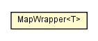

chameleon.core.language
Class Language.MapWrapper<T>

java.lang.Object
 chameleon.core.language.Language.MapWrapper<T>
chameleon.core.language.Language.MapWrapper<T>
- Enclosing class:
- Language
private static class Language.MapWrapper<T>
- extends Object
| Methods inherited from class java.lang.Object |
clone, equals, finalize, getClass, hashCode, notify, notifyAll, toString, wait, wait, wait |
myMap
private Map<Class<? extends T>,T> myMap
Language.MapWrapper
private Language.MapWrapper()
get
public <S extends T> S get(Class<S> key)
put
public <S extends T> void put(Class<? extends S> key,
S value)
remove
public <S extends T> void remove(Class<S> key)
values
public Collection<T> values()
containsKey
public <S extends T> boolean containsKey(Class<S> key)
isEmpty
public boolean isEmpty()